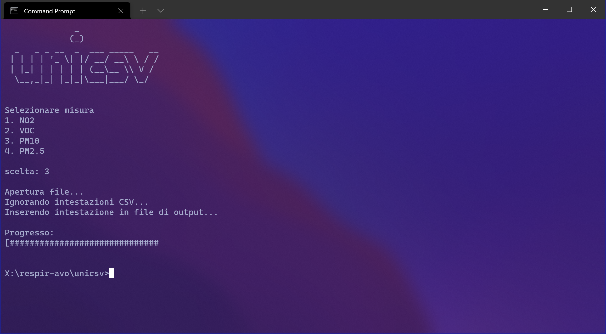

Impostare Flow
Video tutorial per impostare il rilevatore Flow di Plume Labs
Il video che abbiamo realizzato mostra come effettuare la prima configurazione dei rilevatore Flow di Plume Labs.
I file .csv
In che formato sono i dati che abbiamo ottenuto? Cosa sono i file .csv?

Partiamo spiegando cosa sono i file .csv . I file Comma Separated Value (dall'acronimo csv) sono dei file nel quale i dati vengono separati da una virgola (comma).
Unicsv
Che cos'è Unicsv? Perchè è nato?
{kind=link}
Unicsv è un programma scritto in C language in grado di unire due file CSV. Il programma è nato perche avevamo la necessita di avere in un unico file sia la posizione del rilevamento, che i valori rilevati, siccome per la creazione delle mappe e dei grafici era necessario avere un unico file. I dati forniti da Plume Labs, infatti, sono divisi in due file: uno contiene tutte le posizioni GPS fornite dal nostro telefono, mentre nel secondo file sono presenti gli effettvi valori rilevati da Flow.
Per chi vuole conoscere meglio Unicsv:
La struttura di Unicsv è suddivisa in livelli:
- Il livello più vicino all'utente è quello che permette all'utente di unire le misure
- Il livello più lontano, invece, comprende tutta la collezione di librerie scritte per il programma.
Le librerie scritte sono:
- csvlib
- assertlib
- filelib
- iolib
- siglib
Le librerie Assertlib, filelib, e iolib sono delle librerie così dette "wrapper" ovvero librierie già presenti in C standard,
ma queste hanno alcune funzioni in più; un esempio di funzione presente in queste librerie è il println, che corrisponde al printf
del C standard ma in più aggiunge un \n alla fine, in modo da non doverlo scrivere ogni volta.
La libreria filelib, invece, permette di apirere un file senza scrivere ogni volta fileopen e poi la modalità di apertura.